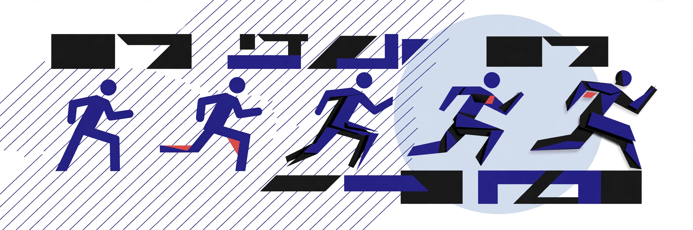
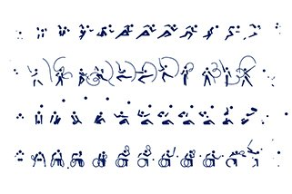
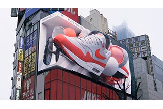
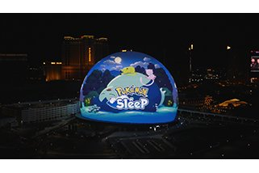
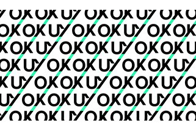
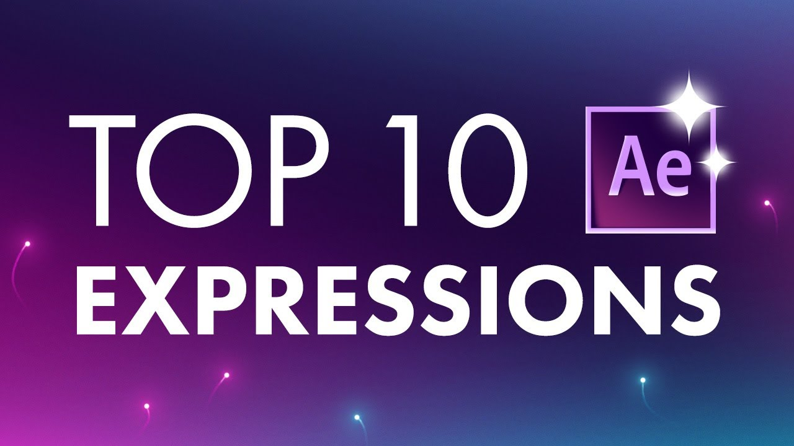
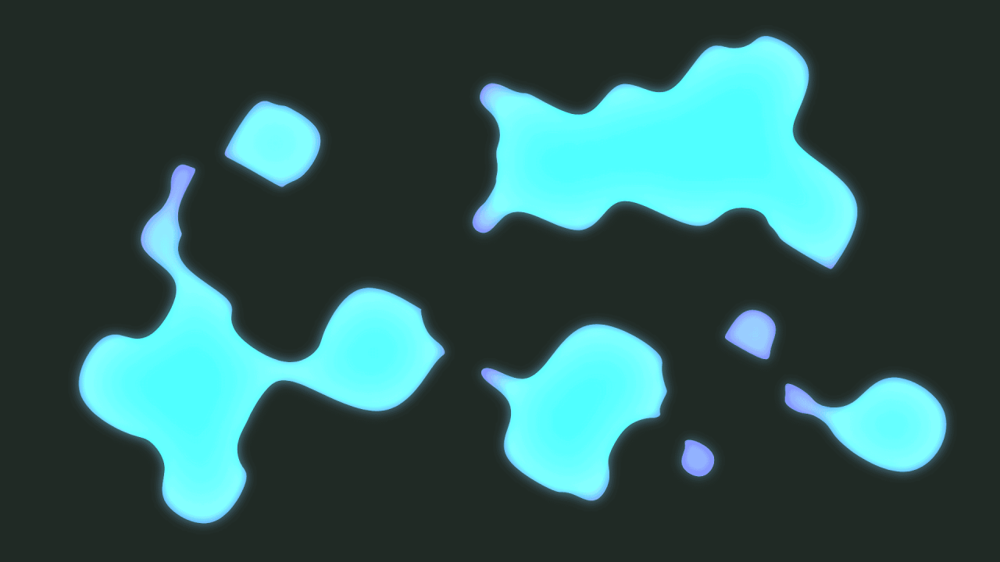

ニュース
今日のハイライト
- トップはAntibodyによる『Blade Runner 2099』タイトル。世界観を「絵」ではなく、タンパク質やスペクトルデータの化学的な抽象で開く判断が今日の核。
- 広告＋モーション系が中心の7本。バケツを枠にするKFC、Unreal Engine 5一貫制作のCaptain Itchなど、システム化の方法がそれぞれ違う。
- ブランディングは「足す」より「絞る」。Flowhubの1マーク・1書体・1色への集約が、KFCの集約と対で読める。
1. 絵ではなく化学で開く、Antibody『Blade Runner 2099』
Amazonの新シリーズのオープニングを、劣化したアナログ映像、タンパク質イメージング、スペクトルデータの語彙で作った抽象シークエンス。CGの世界そのものは見せず、液体でもあり電気でもある要素のグラフィカルな遊びに絞る。Patrick Clairは「抽象的な実行を後押ししてくれるのは今では稀」と語る。説明的なタイトルが増える中で、複雑なグラフィックの考え方に尺を与える判断自体が、タイトルデザインの参照になる。
2. バケツを世界の枠にする、JKR『KFC Bucketverse』
新しい象徴は作らず、誰もが知るバケツをそのままシステムにした刷新。バケツが写真・イラスト・コピーを入れる「枠」になり、カップから建物までスケールする。カーネルは描き直され、ロゴは立体化。StudioDRAMAと作ったKentucky Fried Serif／Sansの2書体が声を担い、ストライプは文字を運ぶアセットへ転用された。「捨てずに、一点へ集約する」ブランド刷新の型として強い。
3. Unreal Engine 5で一貫制作、SuperBlimp『Captain Itch』
Elancoのノミ駆除薬Advantageのキャンペーン。商品説明ではなく、家に居座る招かれざる客Captain Itchという1キャラクターに全てを賭ける。脅威と間抜けさを1つの体に同居させる設計が核で、クライマックスは対峙→猫のキック→後ずさりの3拍。コンセプトから放送マスターまでUnreal Engine 5のリアルタイム制作で通し、20秒放送版からSNS切り出し、プリントまでを1つのアセットシステムとして出荷した点が実務的に参考になる。
4. 1マーク・1書体・1色に絞る、Roboto Studio『Flowhub』
米国の専門小売向けPOS／決済プラットフォームの刷新。旧来の紫を捨て、1つのマーク、Helvetica Now、Neon Mossという緑1色に集約し、Webから店頭の支払い画面まで同じ部品で組む。緑は「最も重要なアクション」にだけ使い、支払い完了時だけ画面全体が緑になって「Paid」と大きく出る。色を絞ることが、そのままUIの意味になる設計。
5. 生きて語るための話、Transport for NSW『Live to Tell The Tale』
ニューサウスウェールズ州交通局の新作フィルム群（Uncle／Robbo／Zaynなど複数篇）。制作はシドニーのRevolver、エージェンシーはDroga5 ANZ。タイトル通り「生き延びて、自分の話を語る」側に立つ構成で、事故の衝撃ではなく、その後に残る語りを中心に置くタイプの交通安全フィルムとして公開された。LBBの作品ページは情報が最小限のため、まず映像本編で語りの置き方を確認したい1本。
6. 新しい見た目に音を合わせる、Guinness『Smooth』
Guinness AfricaのSmoothキャンペーン（Born Social）。依頼は、大胆に刷新されたビジュアルアイデンティティの速さ・色・精神に合う、活気あるトラックを作ること。打楽器的でエネルギーのある曲に有機的な質感と声のレイヤーを重ね、ボイスオーバーも自社で収録したという制作ノートが公開された。リブランド時に「音」を後付けでなく、見た目と同時に設計する事例として読める。
7. 12Kオープンゲートで動画とスチルを一度に撮る、Craftshow Digital
Singing River Health Systemのブランドキャンペーン導入事例。成果物はCM複数版だけではなく、印刷・OTT・デジタルまで使うスチル70点以上。URSA Cine 12K LFで12K 3:2オープンゲート撮影し、動画からグレーディング済みスチル72枚を切り出すことで、動画／スチル別撮りの照明組み直しをなくした。編集から納品までDaVinci Resolve Studioで完結し、期限の3日前に全納品。「1回の撮影を多面納品に設計する」今の広告制作の標準形が具体的に分かる。
特集 ― デザイン特集マガジン・第12号

平面に、時間と空間を足す
――CEKAI／井口皓太の「動くデザイン」
グラフィックデザインは本来、止まっている。ポスターもロゴもピクトグラムも、1枚の中で完結する設計だ。ところがCEKAIの仕事を見ると、その前提が静かに崩れる。記号は動き出し、ロゴはほどけて組み直り、看板は画面の枠を破って街へ飛び出す。中心にいるのは、2013年にクリエイティブアソシエーションCEKAIを設立した映像デザイナー／クリエイティブディレクターの井口皓太。武蔵野美術大学在学中の2008年にTYMOTEを立ち上げて以来、「動的なデザイン」を軸にモーショングラフィックスから実写監督までを横断してきた。今号は、その実践を貫く一つの方法――平面に時間と空間を足す技術――を解剖する。
勉強ポイント
- 静止画を「動きの1コマ」として設計する：最終形のポーズだけでなく、そこへ至る予備動作と余韻まで含めて形を決めると、止まった状態でも動きが読める
- 表示面の物理条件を先にデザインに組み込む：曲面LEDや球体など、映る場所の形状そのものを構図の要素にする。平面の映像を貼るのではなく、面の歪みを前提に作る
- 記号の文法は壊さず、時間だけを足す：ピクトグラムのように読み取りの約束事があるものは、形のルールを守ったまま動きで意味を補強する。自由な演出より制約の使い方が効く
記号を動かす ― 東京2020「動くスポーツピクトグラム」
出発点として最も分かりやすいのが、東京2020大会の「動くスポーツピクトグラム」だ。五輪史上初の試みとして制作され、井口は開会式のVideo Directorも務め、ドローン演出の3Dアニメーションも手がけた。ピクトグラムは「誰にでも一瞬で伝わる静止記号」であることが存在理由だ。そこに動きを足すと、伝達が遅れる危険がある。
ここでの解法（以下は筆者の分析）は、形の文法を一切変えず、競技の動作そのものを時間でなぞることにある。フレームを並べたシートを見ると、各競技の人型が小さな連続動作で分解されている。動きは装飾ではなく「この競技は何をする競技か」という情報の追補で、静止画に戻しても意味が損なわれない。止めても効き、動くとさらに分かる。その二重構造が、記号に時間を足すときの基準になる。

枠を破るのではなく、枠を設計する ― NIKE Air Max Day 2022の3D OOH
新宿の大型ビジョンで展開されたNIKE Air Max Day 2022の3D OOHでは、方法がもう一段進む。シューズが画面から飛び出して見える立体視の仕掛けは、映像の内容だけでなく、ビルの角という表示面の形状と、歩行者の視点位置が揃って初めて成立する。
ここで効いているのは「飛び出し」の派手さ自体ではない、というのが筆者の見立てだ。箱が開き、シューズが現れ、最後にビジョンのキャラクターである猫の手が箱を引き戻す――という短い物語の起伏が、立体感を「見る理由」に変えている。技術のデモで終わらせず、数秒のドラマとして編集する。この「空間を足すときも編集の文法は映像のまま」という姿勢が、OOHを単なる大型モニターから都市の演出へ押し上げている。

ロゴにも時間を ― KOKUYO CIと、球体への到達
同じ発想は、もっと静かな仕事にも通っている。KOKUYOのCIでは、社名の文字列が斜めのストライプと重なって反復するグラフィックが展開された。文字を「読むもの」から「面を構成するリズム」へ扱い替えることで、ロゴが静止した商標ではなく、展開すれば動き出すパターンの種になっている。
そして2025年、舞台はラスベガスの巨大球体空間Sphereの外壁（Exosphere）にまで広がった。「Pokémon Sleep」の映像は、球という最も平面から遠い表示面に、キャラクターの世界をそのまま巻き付けている。ピクトグラム（平面＋時間）→平面ビジョン（平面＋時間＋奥行きの錯覚）→球体（曲面そのものが構図）という流れを追うと、CEKAIの仕事は「動かす技術」の話ではなく、「映る場所ごとに、足す次元を選び直す設計」の話だと分かる。


なお、2026年にギンザ・グラフィック・ギャラリー（ggg）で開かれた個展「井口皓太 モーショングラフィックス」は、この方法を「平面から立体、そして動きへ」と言葉にして展示したもので、展覧会のグラフィックデザインはCEKAI所属のTakumi Abeが担当している。止まったデザインの側にいる作り手と組むことで、「動く」側の論理が平面の側にも逆輸入される。CEKAIが個人の作家性ではなく「アソシエーション（協働体）」として設計されている意味は、ここにあると筆者は考える。自分の映像制作に引き寄せれば、学ぶべきはツールの技法よりも、まず「この媒体には、時間と空間のどちらを、どれだけ足すか」を最初に決める設計の順序だ。
出典
- 井口皓太 プロフィール｜六本木未来会議：https://6mirai.tokyo-midtown.com/creator/iguchi_kota/
- 井口皓太氏の個展情報（ggg第414回企画展）｜京都芸術大学 情報デザイン学科：https://www.kyoto-art.ac.jp/production/?p=201945
- CEKAI 公式サイト（Works一覧）：https://cekai.jp/work/homecomings-us/
AE／Cavalry チュートリアル・表現コーナー
手作業を式と仕組みに置き換える
AEは毎日使うエクスプレッションの実務トップ10、Cavalryは形同士が溶け合うメタボール
線幅もスケールも、崩さず自動で保つ ― Top 10 After Effects Expressions for Amazing Motion Design／Ben Marriott

Ben Marriottが「最も使う」と断言するエクスプレッション10本をカウントダウン形式で紹介する1本。拡大しても線幅を一定に保つMaintain Stroke Width、親のスケールに引きずられないMaintain Scale、timeのバリエーション、Posterize Time、loopOut、別コンポ参照、wiggleまで、コピペ用のGoogleドキュメント付きで一気に揃う。
表現ポイント：核は「アニメーションは手で打ち、関係性は式で保つ」こと。ロゴを拡大しても線が太くならない、親ヌルを動かしても子が崩れない——広告制作で毎回起きる微調整を、最初から式で封じておける。特に線幅維持はシェイプ主体のCMで即戦力。
近づくと溶け合う、ベクターのメタボール ― Learn how to make Metaballs in Cavalry／Kamil K

円同士が近づくと液体のように橋が架かって溶け合う「メタボール」を、解像度を落とさずベクターのまま作る3つの方法を比較する解説。①Boolean＋Path Offset（正で膨らませ、負で戻す）、②Flatten Shape Layers＋Bevel（Duplicator向きで軽い）、③両者の複合（橋の強さを制御できて速い）まで、重さと表現のトレードオフが分かる。
表現ポイント：核は「膨らませてから戻すと、重なり部分だけが残ってつながる」というPath Offsetの往復。Subdivideでジオメトリを足すほどグニャリ感が増す。ロゴの合体、液体っぽいタイトル、細胞状の背景など、AEではブラー＋レベルで擬似的に作る表現を、Cavalryでは編集可能なベクターで持てる。
今日試すなら：まずAEの線幅維持から。手持ちのシェイプに1行貼るだけで効果が分かり、そのままプリセット化できる。メタボールは③の複合方式だけ試せば十分。